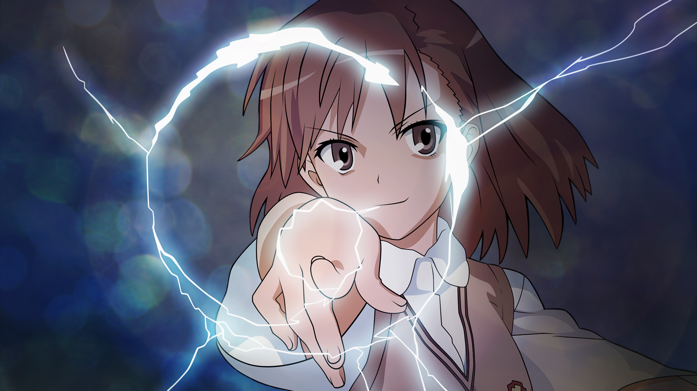
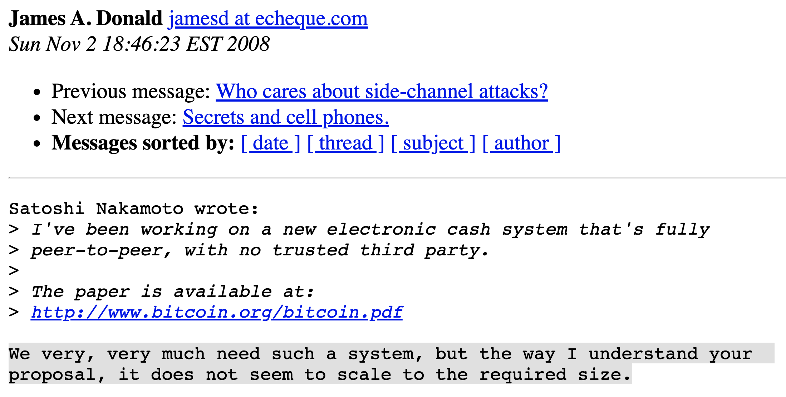
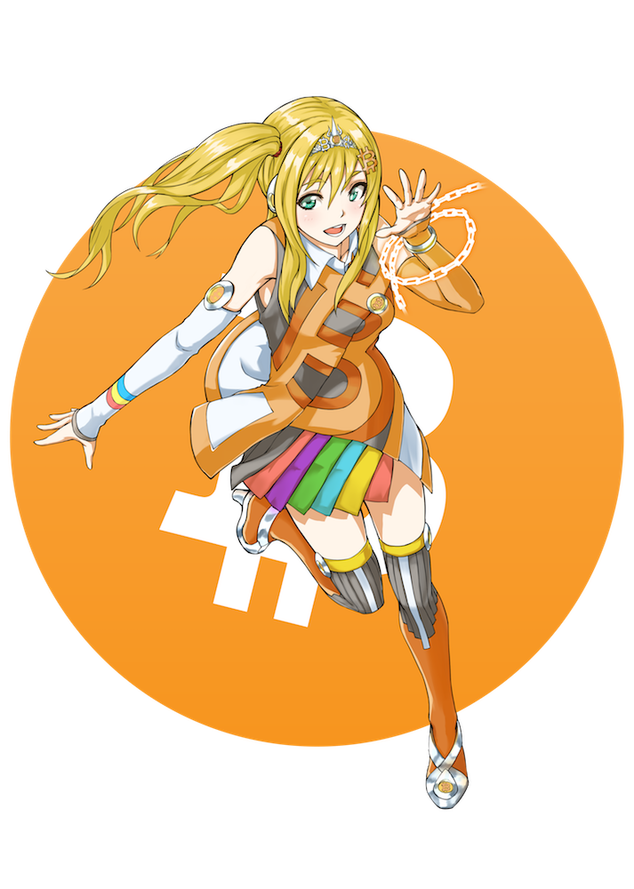
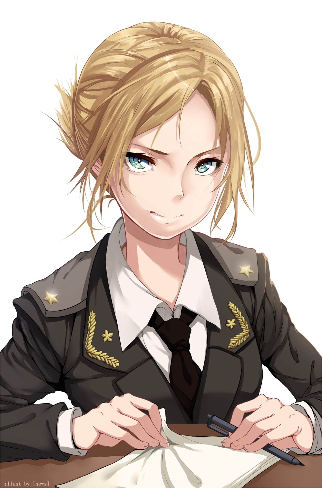
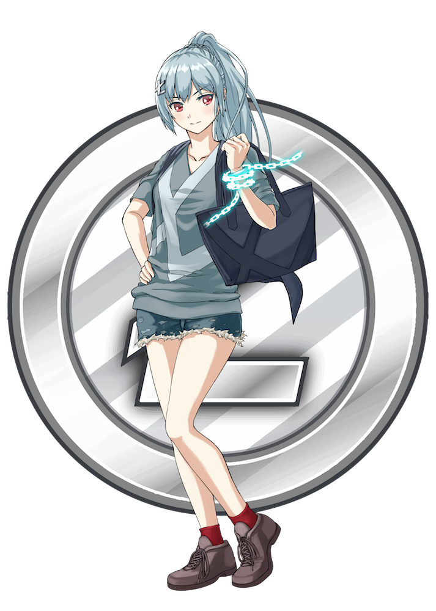

.center[ ### Lightning Network  ] -- .center[  ] --- .left-column-big[ .center[ ### Fiat ] - Custodial - Inflation prone .center[ ### Visa/Mastercard ] - **~24000** txs per second (**kinda**) - **kinda** instant confirmation - **~2 %** tx fee .center[ <br> <br> ] ] -- .right-column-big[ .center[ ### BTC ] - Non-custodial - Deflation prone .center[ ### Blockchain ] - **~5** txs per second - **~10 minutes** for confiramtion - **~1 USD** fee per tx .center[  ] ] --- .center[ ### Payment channel ] -- .left-column-big.center[ ### Multisig output <div class="mermaid"> graph TB A((Alice)) -- sign --> MTX[UTXO] B((Bob)) -- sign --> MTX MTX -- spend --> TX1 MTX -- spend --> TX2 MTX -- spend --> TX[...] MTX -- spend --> TXN </div> ] -- .right-column-big.center[ ### Locktime <div class="mermaid"> graph TB Block130 --> Block131 Block131 --> BlockX[...] BlockX --> Block200 TX[TX<br>locktime=200] --> Block200 </div> ] --- name: unidirectional-channel class: center ### Unidirectional channel --- template: unidirectional-channel count: false <div class="mermaid"> graph TB A[Alice 10 Coins] --> FUND B[Bob 0 Coins] --> FUND FUND[Fund TX<br><br>Alice+Bob 10 Coins] classDef green fill:#cdffb2 class A,B green </div> --- template: unidirectional-channel count: false <div class="mermaid"> graph TB A[Alice 10 Coins] --> FUND B[Bob 0 Coins] --> FUND FUND[Fund TX<br><br>Alice+Bob 10 Coins] classDef green fill:#cdffb2 class A,B,FUND green </div> --- template: unidirectional-channel count: false <div class="mermaid"> graph TB A[Alice 10 Coins] --> FUND B[Bob 0 Coins] --> FUND FUND[Fund TX<br><br>Alice+Bob 10 Coins] --> TX1[TX1<br><br>Alice 9 Coins<br>Bob 1 Coin] classDef green fill:#cdffb2 class A,B,FUND green </div> --- template: unidirectional-channel count: false <div class="mermaid"> graph TB A[Alice 10 Coins] --> FUND B[Bob 0 Coins] --> FUND FUND[Fund TX<br><br>Alice+Bob 10 Coins] --> TX1[TX1<br><br>Alice 9 Coins<br>Bob 1 Coin] FUND --> TX2[TX2<br><br>Alice 8 Coins<br>Bob 2 Coin] classDef green fill:#cdffb2 class A,B,FUND green </div> --- template: unidirectional-channel count: false <div class="mermaid"> graph TB A[Alice 10 Coins] --> FUND B[Bob 0 Coins] --> FUND FUND[Fund TX<br><br>Alice+Bob 10 Coins] --> TX1[TX1<br><br>Alice 9 Coins<br>Bob 1 Coin] FUND --> TX2[TX2<br><br>Alice 8 Coins<br>Bob 2 Coin] FUND --> TX3[TX3<br><br>Alice 7 Coins<br>Bob 3 Coin] classDef green fill:#cdffb2 class A,B,FUND green </div> --- template: unidirectional-channel count: false <div class="mermaid"> graph TB A[Alice 10 Coins] --> FUND B[Bob 0 Coins] --> FUND FUND[Fund TX<br><br>Alice+Bob 10 Coins] --> TX1[TX1<br><br>Alice 9 Coins<br>Bob 1 Coin] FUND --> TX2[TX2<br><br>Alice 8 Coins<br>Bob 2 Coin] FUND --> TX3[TX3<br><br>Alice 7 Coins<br>Bob 3 Coin] classDef green fill:#cdffb2 classDef red fill:#ffcac7 class A,B,FUND,TX3 green class TX1,TX2 red </div> -- **...What's wrong with it?** --- template: unidirectional-channel count: false <div class="mermaid"> graph TB A[Alice 10 Coins] --> FUND B[Bob 0 Coins] --> FUND FUND --> REFUND[Refund TX<br><br>Alice 10 Coins<br>Bob 0 Coins<br><br>Locktime 14 April] FUND[Fund TX<br><br>Alice+Bob 10 Coins] --> TX1[TX1<br><br>Alice 9 Coins<br>Bob 1 Coin] FUND --> TX2[TX2<br><br>Alice 8 Coins<br>Bob 2 Coin] FUND --> TX3[TX3<br><br>Alice 7 Coins<br>Bob 3 Coin] classDef green fill:#cdffb2 classDef yellow fill:#ffffe0 classDef red fill:#ffcac7 class A,B,FUND green class REFUND,TX3 yellow class TX1,TX2 red </div> <br> **Fund TX** should be signed after **Refund TX** --- .center[ ### Timing opcodes ] -- .left-column-big[ .center[ ### OP_CHECKSEQUENCEVERIFY relative locktime opcode ] ```haskell if (input confirmations >= n) then ok else fail ``` ] -- .right-column-big[ .center[ ### OP_CHECKLOCKTIMEVERIFY absolute locktime opcode ] ```haskell if (transaction block height >= n) then ok else fail ``` ] -- <div class="mermaid"> graph LR Block99 --> Block100 Block100 --> BlockX[...] BlockX --> Block200 TX1(TX1 locktime 100) --> Block100 TX2(TX2 can spend TX1 only there) --> Block200 </div> --- .center[ ### HTLC Hash Time Locked Contracts ] -- ```elixir ( keyA and keyB ) or ( keyC and (blockchainHeight >= x) ) ``` -- .center[ ### Foundation of Lightning channels ] - bidirectional money flow - indefinite duration - revokable txs --- .center[ ### Revokable TX ] -- .left-column-big[ .center[ ### Held by Alice ] <div class="mermaid"> graph TB FUND[Fund TX<br><br>10 Coins] --> COMMIT[Commit TX<br>Bob's sig] COMMIT --> OUT1["(Alice and 100 Blocks)<br>or<br>(AliceR and Bob)"<br><br>2 Coins] COMMIT --> OUT2[Bob<br><br>8 Coins] classDef green fill:#cdffb2 class FUND green </div> ] -- .right-column-big[ .center[ ### Held by Bob ] <div class="mermaid"> graph TB FUND[Fund TX<br><br>10 Coins] --> COMMIT[Commit TX<br>Alice's sig] COMMIT --> OUT1[Alice<br><br>2 Coins] COMMIT --> OUT2["(Bob and 100 Blocks)<br>or<br>(Alice and BobR)"<br><br>8 Coins] classDef green fill:#cdffb2 class FUND green </div> ] --- name: lightning-channel .center[ ### Lightning channel ] --- template: lightning-channel count: false .left-column-big[ <div class="mermaid"> graph TB FUND[Fund TX<br><br>Alice+Bob 10 Coins] --> TX1[TX1<br><br>Alice 9 Coins<br>Bob 1 Coin] classDef green fill:#cdffb2 class FUND green </div> ] --- template: lightning-channel count: false .left-column-big[ <div class="mermaid"> graph TB FUND[Fund TX<br><br>Alice+Bob 10 Coins] --> TX1[TX1<br><br>Alice 9 Coins<br>Bob 1 Coin] FUND --> TX2[TX2<br><br>Alice 8 Coins<br>Bob 2 Coin] classDef green fill:#cdffb2 classDef red fill:#ffcac7 class FUND green class TX1 red </div> ] .right-column-big[ TX1 is revoked: - Alice and Bob shared **AliceR** and **BobR** - Concept is similar to "Mutually assured destruction" principal in military ] --- template: lightning-channel count: false .left-column-big[ <div class="mermaid"> graph TB FUND[Fund TX<br><br>Alice+Bob 10 Coins] --> TX1[TX1<br><br>Alice 9 Coins<br>Bob 1 Coin] FUND --> TX2[TX2<br><br>Alice 8 Coins<br>Bob 2 Coin] FUND --> TX3[TX3<br><br>Alice 7 Coins<br>Bob 3 Coin] classDef green fill:#cdffb2 classDef red fill:#ffcac7 class FUND green class TX1,TX2 red </div> ] .right-column-big[ TX1 and TX2 are revoked: - Alice and Bob shared **AliceR** and **BobR** - Concept is similar to "Mutually assured destruction" principal in military ] -- .left-column-big.center[  ] .right-column-big[ - Counter-party always can apply **justice transaction** to bad actor ] --- .center[ ### Multihop HTLC ] ```elixir ( keyA and preimageR ) or ( keyB and OP_CLTV # absolute locktime ) ``` .center[ ### Foundation of Lightning Network ] - bidirectional money flow - indefinite duration - revokable txs - multihop txs --- name: lightning-network .center[ ### Lightning Network ] --- template: lightning-network count: false <div class="mermaid"> graph LR A[Alice] --- B[Bob] B --- C[Carol] </div> --- template: lightning-network count: false <div class="mermaid"> graph LR A[Alice] --- B[Bob] B --- C["Carol<br><br>H = hash(R)"] C -- H --> A </div> --- template: lightning-network count: false <div class="mermaid"> graph LR A[Alice<br><br>H] B[Bob] B --- C["Carol<br><br>H,R"] A -- "HTLC:<br>Bob && R ||<br>Alice && 17:00" --> B </div> --- template: lightning-network count: false <div class="mermaid"> graph LR A[Alice<br><br>H] B[Bob<br><br>H] C["Carol<br><br>H,R"] A -- "HTLC:<br>Bob && R ||<br>Alice && 17:00" --> B B -- "HTLC:<br>Carol && R ||<br>Bob && 16:00" --> C </div> --- template: lightning-network count: false <div class="mermaid"> graph LR A[Alice<br><br>H] B["Bob<br><br>H,R"] C["Carol<br><br>H,R"] A -- "HTLC:<br>Bob && R ||<br>Alice && 17:00" --> B B -- "Reveal R, clear HTLC" --> C </div> --- template: lightning-network count: false <div class="mermaid"> graph LR A["Alice<br><br>H,R"] B["Bob<br><br>H,R"] C["Carol<br><br>H,R"] A -- "Reveal R, clear HTLC" --> B B -- "Reveal R, clear HTLC" --> C </div> --- .middle.center[ ### Cross chain swaps  Possible, if blockchain implements HTLCs ] --- class: center, middle # Thanks [Open LN channel with me!](https://1ml.com/node/031ff7a20feff8784bac738af7f6c8e571124e5580181bae6bfbf372cf68d40e41) ### [back to index](index.html)